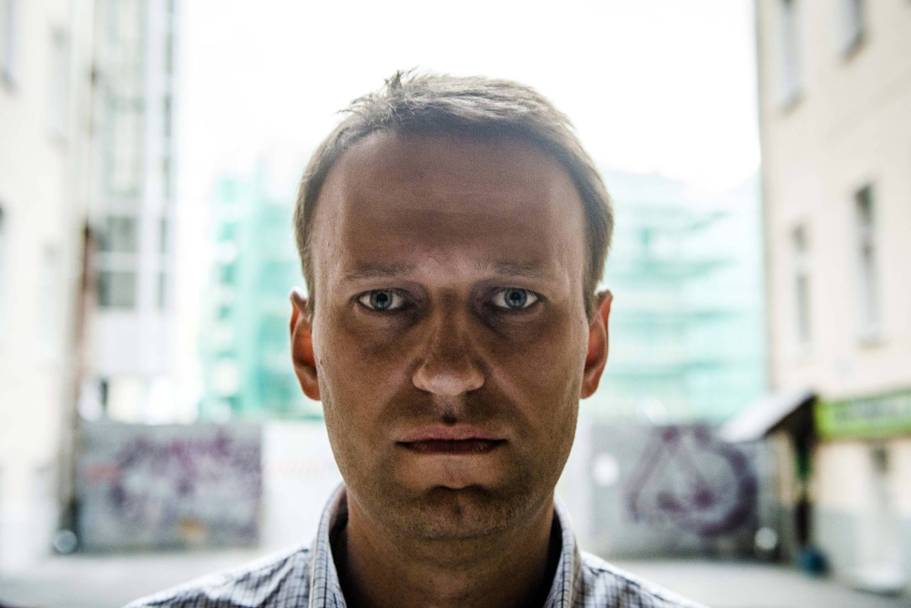

Aleksej Naval'nyj
Leader della principale, e forse unica vera opposizione del presidente della Russia, Vladimir Putin.
È morto il 16
febbraio nel carcere di massima sicurezza in cui stava scontando la sua pena.
Laureato in legge, Naval'nyj si interessa presto alla politica, diventando un ultra nazionalista di destra con posizioni fortemente anti immigranti. La sua carriera politica però resterà nella storia soprattutto per il suo attivismo contro il regime putiniano e non per le sue idee politiche, che non è mai riuscito ad attuare.
Inizia infatti a pubblicare video inchiesta in cui mette in luce la corruzione degli oligarchi e dell’intera classe politica russa, raccogliendo milioni di visualizzazioni.
Nel 2014 però Naval'nyj stesso viene accusato di corruzione e nel 2016 gli viene impedito di correre per le elezioni presidenziali del 2018, vinte da Putin.
Nell’agosto 2020 rischia di morire per un tentato avvelenamento ordinato dai servizi segreti russi, durante un viaggio aereo verso Mosca; curato in Germania, nel gennaio 2021 torna in Russia, nonostante sappia che verrebbe arrestato per violazione della libertà condizionale inflittagli nel 2014. Viene infatti condannato a piú di 30 anni di carcere, accusato anche di frode ed estremismo, accuse che i suoi sostenitori e diverse organizzazioni non governative per i diritti umani definiscono assolutamente posticce/infondate e motivate solo dalla sua posizione scomoda a Putin. I 14 processi in cui era indagato al momento della morte con ogni probabilità avrebbero prolungato ulteriormente la pena.
Pur dal carcere però Nalal’nyj rimane l’oppositore più noto e fastidioso a Putin, raccogliendo sempre più l’indignazione dei cittadini, che grazie a lui realizzano di pagare loro stessi le ville e navi di lusso di oligarchi e politici.
Naval'nyj continua a mostrare tenacia e ironia, grande resistenza morale e fisica, che conquistano e portano molti a conferirgli attributi eroici. Con occhi di ghiaccio e statura imponente, sopravvive all’avvelenamento e ai continui soprusi in carcere, psicologici e fisici, come la riduzione dei pasti e del sonno, già esigui, o le ore prolungate di isolamento forzato, che non sarebbero legali in alcun Paese civile.
Lui resiste e si mostra sempre sorridente ed ironico, come quando, due giorni prima della ferale notizia della morte, strappa persino un sorriso al giudice, scherzando ‘Ho il conto in banca un po’ prosciugato, vostro onore, veda lei se può fare qualcosa’.
Lo scorso dicembre Naval’nyj era stato trasferito nel carcere IK3 di massima sicurezza, noto per la brutalità con cui i suoi detenuti vengono maltrattati e per la sua ubicazione in un ambiente ostile, a 60km dal Circolo polare artico. Molto probabilmente questo trasferimento era finalizzato ad isolare il più possibile l’oppositore politico, in vista delle prossime elezioni presidenziali russe che si terranno tra il 15 e il 17 marzo prossimi e che verranno vinte con ogni probabilità da Putin, il quale otterrebbe così il suo quinto mandato da presidente di un Paese che è diventato a tutti gli effetti un regime autoritario consolidato.
l motivo del decesso è destinato a rimanere ignoto: la morte di Naval’nyj è stata annunciata dal servizio penitenziario federale russo, sostenendo che avrebbe perso conoscenza durante una passeggiata nella prigione. Qualche media legato al governo russo parla di distaccamento di un coagulo di sangue, ovvero di un trombo che potrebbe aver causato un ictus o embolia polmonare o infarto. Mentre per il Times l’oppositore russo è stato ucciso con un pugno al cuore dopo essere stato esposto a condizioni di congelamento per diverse ore, una tecnica insegnata agli agenti delle forze speciali del KBG.
Da molti la sua morte è considerata come l’ennesimo assassinio politico messo in atto dal governo di Putin.
Aleksej Naval'nyj ha costruito un consenso importante e mostrato al mondo che è possibile sfidare il temibile Putin. Nel suo documentario del 2022 vietava calorosamente i suoi collaboratori ad arrendersi in caso lui sarebbe stato ucciso, poiché la sua morte avrebbe solo significato la potenza del loro lavoro d’opposizione e il timore del governo. Ma ci sarà un suo erede all’altezza dell’incarico? Ora il movimento da lui creato è molto disgregato, centinaia di suoi membri sono stati arrestati o sono fuggiti all’estero; ed è difficile trovare qualcun altro con il suo medesimo carisma.
Laureato in legge, Naval'nyj si interessa presto alla politica, diventando un ultra nazionalista di destra con posizioni fortemente anti immigranti. La sua carriera politica però resterà nella storia soprattutto per il suo attivismo contro il regime putiniano e non per le sue idee politiche, che non è mai riuscito ad attuare.
Inizia infatti a pubblicare video inchiesta in cui mette in luce la corruzione degli oligarchi e dell’intera classe politica russa, raccogliendo milioni di visualizzazioni.
Nel 2014 però Naval'nyj stesso viene accusato di corruzione e nel 2016 gli viene impedito di correre per le elezioni presidenziali del 2018, vinte da Putin.
Nell’agosto 2020 rischia di morire per un tentato avvelenamento ordinato dai servizi segreti russi, durante un viaggio aereo verso Mosca; curato in Germania, nel gennaio 2021 torna in Russia, nonostante sappia che verrebbe arrestato per violazione della libertà condizionale inflittagli nel 2014. Viene infatti condannato a piú di 30 anni di carcere, accusato anche di frode ed estremismo, accuse che i suoi sostenitori e diverse organizzazioni non governative per i diritti umani definiscono assolutamente posticce/infondate e motivate solo dalla sua posizione scomoda a Putin. I 14 processi in cui era indagato al momento della morte con ogni probabilità avrebbero prolungato ulteriormente la pena.
Pur dal carcere però Nalal’nyj rimane l’oppositore più noto e fastidioso a Putin, raccogliendo sempre più l’indignazione dei cittadini, che grazie a lui realizzano di pagare loro stessi le ville e navi di lusso di oligarchi e politici.
Naval'nyj continua a mostrare tenacia e ironia, grande resistenza morale e fisica, che conquistano e portano molti a conferirgli attributi eroici. Con occhi di ghiaccio e statura imponente, sopravvive all’avvelenamento e ai continui soprusi in carcere, psicologici e fisici, come la riduzione dei pasti e del sonno, già esigui, o le ore prolungate di isolamento forzato, che non sarebbero legali in alcun Paese civile.
Lui resiste e si mostra sempre sorridente ed ironico, come quando, due giorni prima della ferale notizia della morte, strappa persino un sorriso al giudice, scherzando ‘Ho il conto in banca un po’ prosciugato, vostro onore, veda lei se può fare qualcosa’.
Lo scorso dicembre Naval’nyj era stato trasferito nel carcere IK3 di massima sicurezza, noto per la brutalità con cui i suoi detenuti vengono maltrattati e per la sua ubicazione in un ambiente ostile, a 60km dal Circolo polare artico. Molto probabilmente questo trasferimento era finalizzato ad isolare il più possibile l’oppositore politico, in vista delle prossime elezioni presidenziali russe che si terranno tra il 15 e il 17 marzo prossimi e che verranno vinte con ogni probabilità da Putin, il quale otterrebbe così il suo quinto mandato da presidente di un Paese che è diventato a tutti gli effetti un regime autoritario consolidato.
l motivo del decesso è destinato a rimanere ignoto: la morte di Naval’nyj è stata annunciata dal servizio penitenziario federale russo, sostenendo che avrebbe perso conoscenza durante una passeggiata nella prigione. Qualche media legato al governo russo parla di distaccamento di un coagulo di sangue, ovvero di un trombo che potrebbe aver causato un ictus o embolia polmonare o infarto. Mentre per il Times l’oppositore russo è stato ucciso con un pugno al cuore dopo essere stato esposto a condizioni di congelamento per diverse ore, una tecnica insegnata agli agenti delle forze speciali del KBG.
Da molti la sua morte è considerata come l’ennesimo assassinio politico messo in atto dal governo di Putin.
Aleksej Naval'nyj ha costruito un consenso importante e mostrato al mondo che è possibile sfidare il temibile Putin. Nel suo documentario del 2022 vietava calorosamente i suoi collaboratori ad arrendersi in caso lui sarebbe stato ucciso, poiché la sua morte avrebbe solo significato la potenza del loro lavoro d’opposizione e il timore del governo. Ma ci sarà un suo erede all’altezza dell’incarico? Ora il movimento da lui creato è molto disgregato, centinaia di suoi membri sono stati arrestati o sono fuggiti all’estero; ed è difficile trovare qualcun altro con il suo medesimo carisma.